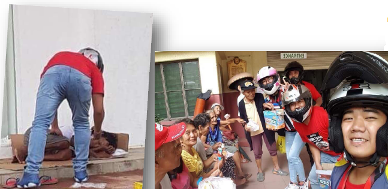

SBMA CHIEF BAGS 'JCI' PINAY POWER AWARD
By Randy Datu
SUBIC BAY FREEPORT — Subic Bay Metropolitan Authority (SBMA) Chairman and Administrator Wilma T. Eisma was named Pinay Power awardee for Central Luzon, besting nine other nominees to the competition organized by the Junior Chamber International (JCI) Philippines.
Ruth Devillena, JCI Olongapo vice president, disclosed that Eisma was nominated by JCI Olongapo in the business category for excelling in management and entrepreneurship.
“Her efforts provided economic development tothe community and helped others succeed in business,” Devillena said of Eisma’s nomination.
She added that out of 10 Pinay Power nominees in the Central Luzon region, Eisma emerged as the re-gional Pinay Power awar-dee. The others were nomi-nated for excellence in sports, academe, and community.
However, due to a prior commitment, Eisma was not able to attend the regional awarding ceremony for the Pinay Power Summit Awards held in Tarlac City last July 21 and JCI offi-cials presented her with the award here last Monday.
In accepting the award, Eisma cited his co-workers at the SBMA for helping build a culture of excellence and achievement in the Subic Bay Freeport.
“There’s no better time than now to say that we’re better and stronger together,” Eisma said.
“My achievements are their achievements, too, because I cannot do this job all by myself.”
“I am truly humbled and honored to receive this award that recognizes women. And I share this with the equally remarkable women and men of SBMA who have given me full support in all my endeavors,” she added.
The Pinay Power award, which was founded in 2013 by JCI Makati Princess Urduja chapter, is now a national project of JCI Phils. aimed at recog-nizing women who are com-mitted in the pursuit of women protection and com-munity development.
JCI Phils. is a non-profit organization of young active citizens ages 18 to 40 who are engaged and committed to creating im-pact in their communities, with the mission to provide development opportunities that empower young people to create positive change.
Eisma, who is a lawyer, was also adjudged a winner in last year’s search for the “100 Most Influential Fili-pina Women in the World,” which recognizes women of Philippine ancestry who are influencing the face of leadership in the global workplace.


Fishermen’s Forum Held in Sasmuan
by Phil. News Agency
SASMUAN, Pampanga, Aug.7-- About 100 fisherfolks and residents in Barangay Batang II attended a Stakeholders’ Forum of the Department of Environment and Natural Resources-Manila Bay Coordinating Office (DENR-MBCO) and partners from the national and local government.
“We are holding this activity to educate fisherfolks and residents with the Supreme Court Mandamus of restoring Manila Bay to its original seawaters that is fit for swimming, bathing and skin diving by proper rehabilitation of water channels,” DENR-MBCO Central Luzon Focal Person Cynde T. Pagador said.
“According to studies we conducted, Manila Bay is no longer safe for swimming because of its high coliform content obtained from both human and animal wastes,” Pagador added.
The forum featured dis-cussions from the Philip-pine Coast Guard on the registration of the locals’ vessels or Bangka under a Safety, Security and Envi-ronmental Numbering System.
Moreover, Bureau of Fisheries and Aquatic Resources (BFAR) gave an overview on existing laws, issuances and regulations concerning fishing active-ties.۩
178 Clark workers get P2.7-M in claims through mediation: DOLE
by Phil. News Agency
CLARK FREEPORT ZONE- At least 178 wor-kers from various locators here and nearby areas have received more than P2.71 million in monetary claims through the Single Entry Approach, the Department of Labor and Employment (DOLE) said.
Commonly known as SEnA, the Single Entry Approach is an inexpensive developmental mediation program of the DOLE that aims to speed-up resolution of labor disputes between workers and employers.
DOLE Regional Director Zenaida Angara-Campita said the presence of the labor agency’s satellite office at the Clark Freeport makes it easier and more accessible for workers here to seek assistance in resolving their labor issues with their employers.
“We are happy to report our SEnA scorecard this July as an important milestone as far as indus-trial mediation is concerned. The SEnA has been around for nearly 10 years and we have found great success in preventing various labor disputes materialize into full blown labor standard cases,” Campita said.
DOLE Clark Satellite Office (CSO) head Jose Roberto Navata said that they were able to resolve and settle 46 requests for assistance (RFAs) within an average of three days.
“We were able to handle quite a load of RFAs for July alone and we are thankful that we hit a 100-percent disposition rate where we were able to come up with win-win solutions for both management and workers in the least amount of time,” he said.
Labor and Employment officer Jerwin Bargas, for his part, said that the SEnA made it cost-effective for complainants availing of the DOLE’s assistance.
“But now, all they have to do is visit our office situated at the One Stop Shop Services for OFWs and file them there instead,” Bargas said. ۩
Kabataan, hinimok sa pagbabasa
OLONGAPO CITY- Ipinagdiwang ang SM City Olongapo ang National Children’s Book Reading Day (NCBRD), isang taunang okasyon sa ilalim ng programa ng SM Cares for Children and Youth, kamakailan.
Grade 1 hanggang
NCBRD ay naglalayong ipalaganap ang literacy at hikayatin ang mga bata na hubugin ang kanilang pagkalibang sa pagbabasa sa murang edad pa lamang.
Sa nabanggit na okasyon, 50 mag-aaral mula sa Asinan Elementary School sa Olongapo City, mulaGrade 1 hanggang 4 ang binigyang pagkakataon na makapakinig ng mga kwento sa mga aklat na nilimbag ng Vibal and Anvil Publishings.
Ang mga bata ay nalibang sa mga kwentong binigyang buhay nina Maria Raquel Bustamante-Dela Torre ng 96.7 Klite FM Olongapo at Marie Elaine Gonzales, leasing manager ng SM Olongapo.
Naging masigla ang mga bata sa pakikinig sa mga kwento mula sa mga aklat at aktibong nakilahaok sa talakayan. Sa tulong ng mga tagapagkwento, napag-usapan ang mga mabubuting mensahe mula sa mga kwento, at hinikayat ang mga bata na maging mahilig sa pagbabasa.
Ang NCBRD ay ipi-nagdiriwang sa SM Super-malls upang iparanas sa mga bata ang sining ng pagbabasa sa pakikipagtulu-ngan ng Department of Education (DepEd), Anvil Publishing , Vibal Pub. at National Bookstore
Ang SM Olongapo at iba pang SM Supermalls sa buong bansa at sa China ang magkakasabay na nagdi-wang ng Book Reading Day katuwang ang mga partner na nagbahagi ng katulad na pagmamalasakit sa pagpa-paunlad ng literasiyasa murang edad.۩

Yamaha Mio 3 Club of the Philippines

They truly LOVE ZAMBALES
Mga Zambaleñong nag- ambag-ambag upang makapagbigay ng makakain sa ating mga kababayan ( mga bata at Homeless family ) na nasalanta ng nakalipas na pagbaha sa Subic at Olongapo.
Nakatutuwang pagmasdan na kahit sa kanilang munting tulong ay makikita SA mukha ng mga naabutan ang malalaking ngiti at kasiyahan.Ang kusang-loob na pagtulong at malasakit sa kapwa ay naganap katatapos lamang ng malawaang pagbaha sa Olongapo City at Subic.
Sa inyo na mga miyembro ng YM3CP Zambales Chapter, kami ay lubos na humahanga sa inyong taglay na kabutihang puso.
Pasasalamat:
Larawan: Raven Canonizado
Teksto: Ar-jay Calimlim Magpantay

Editorial
Treat to school children
There is a national event that we do not celebrate at school, but students , especially those in the kindergarten and elementary level, should be aware of. It is a celebration only the SM Supermall, nationwide, observe and have fun of it with the kids.
This national event is the National Children’s Book Reading Day or NCBRD, celebrated annually under the initiative of the SM Cares for Children and Youth, a corporate social responsibility (CSR) arm of the SM Prime Holdings, Inc.Mbr>
The NCBRD aims to spread the literacy among the kids at their early age and to encourage them to love and enjoy reading books of their interests. During the event, selected students from public schools are “treated” with the opportunity to various activities that are related to improving skills in reading, listening and getting new friends.
In Olongapo City, about 50 students from Asinan Elementary School (Grade 1 to Grade 4) and their teachers were selected to join the celebration in SM City Olongapo mall. The young kids were told stories about fantasy and comic heroes brought to life by invited storytellers from books published by Vibal and Anvil Publishings. Thanks to Maria Raquel Bustamante-Dela Torre of a local radio here and Marie Elaine Gonzales, the leasing manager of SM Olongapo.
The kids did not only enjoy the stories, nor they only learned the good moral values relayed by each story told, but they also understand how interesting it is to read books and what are the many things you could discover in reading books.
Good books are important in the development of education system in the Philippines. Not to mention that many of the books distributed to students in the public schools are almost dilapidated with pages torn, if not missing. It is time that the government, through its education arm the Dep Ed, should address the lack of books in the school.
The program of SM is a model to the business sector in the country on how they could help improve the reading skills of many school children in the country. Let this program continue to grow, and hopefully, in the next year will include students in the countryside.

S a panahon ngayon na napakarami nang nagkakasakit ng diabetes ay mahalaga na maunawaan natin kung paano ito maiiwasan, at malaman kung ano-ano ang mga tamang pagkain na makakatulong upang tayo ay maging ligtas sa sakit na diabetes.
Ayon sa RiteMed.com.ph, Ang diabetes mellitus ay isang karamdaman kung saan ang katawan ay hindi makalikha ng sapat na insulin o kaya ay hindi makaresponde nang maayos dito. Ang insulin ay ang hormone na naglilipat ng asukal mula sa dugo papunta sa iba’t-ibang cells upang gawing enerhiya ng katawan. Ang sintomas ng diabetes ay hindi madaling mahalata dahil kadalasan ang mga ito ay napagkakamalang pangkaraniwang kondisyon.
Sa lathalain na sinipi mula sa Kalusugan.Ph na mababasa sa internet, ibinahagi nito ang mahahalagang payo para tayo ay makaiwas sa sakit na diabetes. Basahin po natin:
10 TIPS SA PANGANGALAGA SA KALUSUGAN NG MAY DIABETES
Ang pagkontrol sa mga pagkain na kinakain sa araw-araw na sinasabayan pa ng regular at tamang pag-eehersisyo at pag-inom ng mga gamot ang pinakaepektibong paraan ng pangangalaga at [pagpapanatili] sa kalusugan ng taong may sakit na diabetes. Ito ay upang maiwasan ang mga komplikasyon na dulot ng sakit. Ang sumusunod na mga tip ay makatutulong sa pagpapanatili ng kalusugan ng taong may diabetes.
1. Kumain lagi nang regular sa oras. Ang sobrang pagtaas o sobrang pagbaba ng lebel ng asukal sa dugo na karaniwang nararanasan kung may sakit na diabetes ay maaaring maiwasan kung kakain nang regular sa oras. Halimbawa, ang oras ng almusal ay panatilihing nakapako sa 7:00 NU bawat araw, ang tanghalian ay sa 12:00 NN, at ang pagkain sa hapunan ay 7:00 NH sa bawat araw.
2. Palitan ang mga simpleng carbohydrates ng mga komplikadong carbohydrates. Ang mga pagkaing gaya ng asukal, kanin, at tinapay, ay maiging mapalitan ng mga may komplikadong uri ng carbohydrates gaya ng oats, pasta, whole-grain na tinapay, kamote, at mais, upang maiwasan ang mabilis na pagtaas ng lebel ng asukal sa dugo.
3. Bawasan ang dami ng carbohydrates na kinakain. Ang carbohydrates ay isang komplikadong uri ng asukal. Bawasan ang dami ng kinakain na carbohydrates sa bawat araw. Bigyang pansin ang iba pang pagkain gaya ng mga gulay, puti ng itlog, at
mga karne.
4. Dagdagan ng protina, fiber at omega 3 fats ang mga kinakain. Ang binabawas na carbohydrates ay dapat palitan ng mayaman sa protina (manok, isda, puti ng itlog, gatas), fiber (gulay at prutas) at omega 3 fats (isda at mga mani). Ang mga ito ay nakatutulong na pabilisin ang metabolismo at mabawasan ang taba sa katawan, na nagreresulta naman sa mas mabilis na pagkontrol sa lebel ng asukal sa katawan.
5. Mag-ehersisyo araw-araw. Ang pagkontrol sa mga kinakain ay maiging masabayan ng regular na pag-eehersisyo. Ang paglalakad nang 45 minuto sa bawat araw ay sapat na para mamentena ang lebel ng asukal sa dugo, at mabawasan ang mga taba sa katawan.
6. Regular na pagbabantay sa dami ng asukal sa mga kinakain. Mahalaga na mabantayan nang husto ang dami ng asukal na pinapasok sa katawan. Alamin at bilangin kung gaano karami ang taglay na asukal ng bawat pagkaing kinakain.
3 utas,13 aresado sa buy-bust
ni LIGHT NOLASCO/ BALITA
NUEVA ECIJA (Aug. 7) – Tatlo ang nasawi habang 13 ang naaresto sa magkakahiwalay na anti-illegal drugs operation sa Nueva Ecija, sa nakalipas na 72 oras.
Sa report na ipinadala kay Senior Supt. Eliseo Tanding, Nueva Ecija Police director, ang mga nasawi ay sina Melvin Santos, ng Barangay La Torre, Talavera; Kenneth Corpuz, ng Dicarma, Caba-natuan City; at Leonardo Milan, 41, ng Bgy. Uma-ngan, Aliaga, pawang sa lalawigang ito.
Ang unang dalawang napatay ay nakipagbarilan umano sa mga pulis nang makahalatang operatiba ng pulisya ang katransaksyon.
Nanlaban umano sa pulis si Milan, sa isang checkpoint sa San Mariano, San Antonio ng nabanggit na lalawigan.
Ayon kay Chief Insp. Marlon Cudal, hepe ng San Antonio police, sangkot si Milan sa robbery hold-up activities sa Aliaga, Nueva Ecija at drug surrenderer noong 2016.
Kabilang naman sa mga naaresto sina Erwin Reva-muntan, 51, ng Bgy. Poblacion West; Casiano Agustin III, 34, ng Calaocan District, kapwa taga-Rizal; at Maximo Mallari, 51, ng Bgy. Palomaria, Bongabon.
Ricardo Caguiat, 65, ng Bgy. 201, 3018 Abucay St., Tondo, Maynila na nakuhanan ng apat na pakete ng shabu.
Kabilang din sina Ronnie Obligasyon, 47, ng San Leonardo; Efren de Fiesta, 35, ng Bgy. Villa Flores, Cuyapo; Jayson Carvajal Villacorta, 39, ng Bgy. San Juan Aliaga; Roberto Pingol Magno, 35, ng Bgy. San Roque, San Isidro. Dinakip din sa Purok 2, Bgy. Imelda sina Rodolfo Padilla Iniego, Jr., 21; Roberto Nuque Cincepcion, 38; Wilson Villanueva dela Cruz, 18, kapwa taga- Bgy. MS Garcia; Eric Vitoriolo, 41; at Leonora dela Cruz Mallari, 54, Bgy. Imelda, Cabanatuan City.۩
Baby patay sa sunog
CABANATUAN CITY (Aug. 7)– Isang sanggol na lalaki ang nasawi habang anim na iba pa ang sugatan nang matupok ang kanilang bahay sa Barangay Caali-bangbangan, Cabanatuan City, kamakailan.
Kinilala ang nasawi na si Arwin Xian Legaspi, 1 taong gulang, ng Sitio Boundary, ng nabanggit na barangay.
Sa imbestigasyon, naga-nap ang sunog sa nasabing lugar dakong 1:50 ng madaling araw.
Kabilang sa nasugatan si Ariel Legaspi, 52; at live-in partner na si Clarissa Gamillam 40; at mga anak na sina Bryan, Justina at Angelica; at inang si Jovita Gamillam, 64.
Umabot sa ikalawang alarma ang sunog bago naapula ng mga bumbero.-LIGHT A. NOLASCO